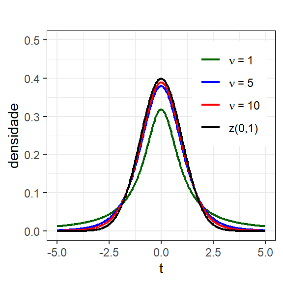

# Carregar a biblioteca ggplot2
library(ggplot2)
theme_set(theme_bw())
# Dados para eixo horizontal
x <- seq(from = 95, to = 105, length = 500)
# Avaliando cada valor de x na fdp da distribuição normal
y <- dnorm(x = x, mean = 100, sd = 1)
# Criar um data frame para o ggplot
data <- data.frame(x = x, y = y)
# Plotando a fdp com ggplot2
ggplot(data, aes(x = x, y = y)) +
geom_line() +
ylab("densidade")1 Distribuições importantes à modelagem e otimização de Experimentos
1.1 Introdução
Inferência é o ramo da estatística que trata da obtenção de informações acerca de um parâmetro populacional a partir de dados amostrais. Em outras palavras, pode-se dizer que inferência constiste no aprendizado sobre a população considerando um conjunto limitado, porém suficiente, de observações retiradas desta. Em diversas situações deseja-se obter informações de parâmetros desconhecidos de uma população de interesse. Por exemplo, de um lote de tubos sem costura produzidos em um determinado horizonte de produção, por uma determinada empresa metalúrgica. Neste caso é viável coletar uma amostra para inspecionar e inferir sobre o diâmetro médio da população de tubos produzida em relação a um valor alvo de interesse. Em outros procedimentos, podem ser comparados processos, materiais, métodos de preparação, entre outras fontes de variação de interesse científico e industrial.
Neste capítulo serão abordadas algumas distribuições essenciais à modelagem e análise de experimentos. Tais funções serão usadas em diversos testes estatísticos para inferência e avaliação da significância dos efeitos de variáveis de interesse em diversos planejamentos explicitados neste livro.
Neste capítulo é utilizado apenas o pacote ggpplot2 para gráficos, além das funções básicas do R. Recomenda-se a instalação destes utilizando o comando install.packages("<nome_pacote>"). Sempre que aparecer nos blocos de código R propostos o comando library(<nome_pacote>) para carregar um determinado pacote, antes este deve ser instalado.
1.2 Distribuição normal
Seja uma amostra aleatória de \(n\) observações,\(x_1\), \(x_2\), …, \(x_n\), retirada de uma população de tamanho \(N\). Cada observação amostral é retirada de forma independente. Se a população de origem é dita normal, ela é descrita pela função densidade de probabilidade (fdp) da Equação 1.1. Uma variável aleatória (va) \(x\) descrita por esta distribuição é dita normal com média \(\mu\) e variância \(\sigma^2\), isto é \(x \sim N(\mu,\sigma^2)\).
\[ f(x) = \frac{1}{\sqrt{2\pi}\sigma}e^{-\frac{1}{2}(\frac{x-\mu}{\sigma})^{2}} \tag{1.1}\]
A Figura 1.1 ilustra a função densidade de probabilidade da distribuição normal de uma variável aleatória (va) \(x \sim N(100,1)\), enquanto a Figura 1.2 expõe um histograma de uma amostra com n = 1000 observações retirada de tal va. O código para obter tais gráficos no R são expostos à seguir.
A Figura 1.3 expõe gráficos de densidade de probabilidade da função normal com variação nos parâmetros de posição (média) e dispersão (variância). Pode-se observar que o aumento na média apenas desloca a distribuição para a direita, enquanto o aumento na variância resulta em uma distribuição com maior probabilidade nas caudas e menor probabilidade na média. Quando duas vas tem médias diferentes, com variância igual, diz-se haver um viés ou vício entre estas, enquanto duas vas com médias iguais e variâncias distintas, são ditas com erro aleatório distinto. A distribuição normal é simétrica e assíntota, tendo portanto domínio \(x \in (-\infty, +\infty)\).
Os parâmetos populacionais da distribuição normal podem ser calculados conforme a Equação 1.2 e a Equação 1.3. A variância populacional \(\sigma^2\) tem unidade de medida igual ao quadrado da unidade de medida da va em avaliação. Neste sentido, uma outra medida é comumente utilizada como medida de dispersão, o desvio-padrão, \(\sigma\), sendo calculado conforme a Equação 1.4. O desvio-padrão, \(\sigma\), tem sua unidade de medida igual à da va de interesse, sendo de interpretação mais fácil como medida de dispersão em situações práticas. Uma propriedade importante do desvio-padrão é que no gráfico da função densidade de probabilidade os pontos de inflexão estão à distância de um desvio-padrão em relação à média, conforme ilustrado na Figura 1.4.
\[ \mu = \frac{\sum_{i = 1}^{N}x_i}{N} = \frac{x_1+x_2+\dots+x_N}{N} \tag{1.2}\]
\[ \sigma^2 = \frac{\sum_{i = 1}^{N}(x_i - \mu)^2}{N} \tag{1.3}\]
\[ \sigma = \sqrt{\frac{\sum_{i = 1}^{N}(x_i - \mu)^2}{N}} \tag{1.4}\]
Ao obter uma amostra de uma distribuição normal com parâmetros desconhecidos é importante estimar os parâmetros populacionais. A estimativa para a média, \(\hat{\mu} = \bar{x}\), é obtida conforme a Equação 1.5, tomando, portanto, a razão entre a soma das \(n\) observações, \(x_1, x_2, ..., x_n\), e o tamanho amostral \(n\). Já a variância amostral \(\hat{\sigma}^2 = s^2\) é estimada considerando o quadrado da soma dos desvios em relação à média, dividido pelo número de graus de liberdade da amostra \(n - 1\), conforme Equação 1.6. O desvio-padrão amostral também pode ser obtido tomando a raiz quadrada da variância amostral, conforme Equação 1.7.
\[ \bar{x} = \frac{\sum_{i = 1}^{n}x_i}{n} = \frac{x_1+x_2+...+x_n}{n} \tag{1.5}\]
\[ s^2 = \frac{\sum_{i = 1}^{n}(x_i - \bar{x})^2}{n - 1} \tag{1.6}\]
\[ s = \sqrt{\frac{\sum_{i = 1}^{n}(x_i - \bar{x})^2}{n - 1}} \tag{1.7}\]
Em uma distribuição de probabilidade contínua, como a normal, a probabilidade consiste na área sob a curva, enquanto as distribuições discretas admitem a probabilidade pontual, conforme expresso na Tabela 1.1. A Figura 1.5 ilustra o conceito de probabilidade pontual em distribuição discreta e de probabilidade em um intervalo de interesse, consistindo na área sob a curva da função densidade de probabilidade, no caso contínuo.
| Distribuição discreta | Distribuição contínua |
|---|---|
| 0 \(\leq p(x_j) \leq 1\) | \(p(a \leq x \leq b) = \int_a^b f(x)dx\) |
| \(\sum_{j=1}^{n} p(x_j) = 1\) | \(\int_{-\infty}^{+\infty} f(x)dx = 1\) |
| \(\mu = E(x) = \sum_{j=1}^{n} x_jp(x_j)\) | \(\mu = E(x) = \int_{-\infty}^{+\infty} xf(x)dx\) |
| \(\sigma^2 = Var(x) = \sum_{j=1}^{n} (x_j-\mu)^2p(x_j)\) | \(\sigma^2 = Var(x) = \int_{-\infty}^{+\infty} (x-\mu)^2f(x)dx\) |
Ainda conforme expresso na Tabela 1.1, para o caso discreto o total de todos os eventos deve ser unitário. De maneira análoga, a integral de uma função densidade de probabilidade contínua em todo o seu domínio deve ser igual à unidade. A média de uma va pode ser descrita utilizando o operador de esperança \(\mu = E(x)\). No caso discreto a média consiste na soma do produto entre os eventos e suas respectivas probabilidades em todo o espaço amostral. Já no caso contínuo, a média consiste na integral do produto entre o valor da va e sua fdp em todo o domínio da função. A variância de uma va pode ser descrita através do operador de variância, que por sua vez, pode ser descrito usando o operador de esperança, isto é, \(\sigma^2= Var(x) = E[(x-\mu)^2]\). A Tabela 1.1 finaliza expondo o cálculo da variância para os casos discreto e contínuo.
Algumas propriedades dos operadores de média ou esperança e variância são essenciais à análise, modelagem e otimização de experimentos, sendo resumidas na Tabela 1.2, sendo \(x\) uma va com média \(E(x)=\mu_x\) e variância \(V(x)=\sigma_x^2\). Seja \(a\) uma constante \(a \in \Re\). Seja também uma va \(y\) com média \(E(y)=\mu_y\) e variância \(V(y)=\sigma_y^2\), sendo \(x\) e \(y\) vas independentes, é possível provar as propriedades resumidas na Tabela 1.2.
| Operador de média ou esperança | Operador de variâncias |
|---|---|
| \(E(x)=\mu_x\) | \(V(x)=E[(x-\mu_x)^2]=E(x^2)−E^2(x)\) |
| \(E(a)=a\) | \(V(a)=0\) |
| \(E(a+x) = a + E(x)\) | \(V(a+x) = V(x)\) |
| \(E(ax) = aE(x)\) | \(V(ax) = a^2V(x)\) |
| \(E(x + y) = E(x) + E(y)\) | \(V(x+y)=V(x-y)=V(x)+V(y)\) |
Tomando uma variável aleatória que segue a distribuição normal com parâmetros \(\mu\) e \(\sigma^2\), isto é, \(x \sim N(\mu,\sigma^2)\), é possível calcular probabilidades considerando valores de interesse do investigador, conforme o Exemplo a seguir.
Seja um processo de trefilação de aço que produz arames com diâmetro médio mm \(\mu\) = 3,40 e variância \(\sigma^2 = 0,10^2 mm^2\). Deseja-se calcular a probabilidade de o diâmetro ser menor que 3,30 mm.
No R é fácil calcular esta probabilidade através do comando pnorm, conforme segue. Logo, \(P(x < 3,3) = 0.1586553\). A Figura 1.6 ilustra esta probabilidade.
# P(x < 3,3)
pnorm(q = 3.3, mean = 3.4, sd = 0.1)[1] 0.1586553Para obter o gráfico da função densidade de probabilidade com a área relacionada à probabilidade hachurada, similar ao da Figura 1.6, deve-se utilizar o código a seguir.
df <- data.frame(
x = seq(3, 3.8, length = 500),
y = dnorm(seq(3, 3.8, length = 500), mean = 3.4, sd = 0.1)
)
shaded_area <- data.frame(
x = seq(3, 3.3, length = 100),
y = dnorm(seq(3, 3.3, length = 100), mean = 3.4, sd = 0.1)
)
ggplot(df, aes(x, y)) +
geom_line(color = "black", linewidth = 0.8) +
geom_ribbon(
data = shaded_area,
aes(ymin = 0, ymax = y),
fill = "seagreen3", alpha = 0.5
) +
annotate("text", x = 3.15, y = 1,
label = "P(x < 3.3)", color = "green4", size = 5) +
labs(x = "x", y = "Probabilidade")Um caso particular da distribuição normal é a normal padrão \(z \sim N(0,1)\). É comum utilizá-la como referência para obter escores da distribuição normal, isto é valores \(Z\) em relação à uma probabilidade de interesse. Além disso, a padronização deixa a va normal adimensional e centrada em zero e com desvio-padrão unitário. São facilmente encontradas tabelas para estes valores considerando probabilidades distintas. Entretanto, o advento dos pacotes computacionais estatísticos diminui a necessidade destas. Qualquer variável aleatória normalmente distribuída, \(x \sim N(\mu,\sigma^2)\), pode ser padronizada utilizando-se a Equação 1.8.
\[ z = \frac{x-\mu}{\sigma} \tag{1.8}\]
A Equação 1.9 expõe a função densidade de probabilidade da distribuição normal padrão \(z\). O coeficiente \(\frac{1}{\sqrt{2\pi}}\) garante que a área sob a curva seja unitária. A probabilidade à esquerda de um valor de interesse é denotada \(\Phi(\zeta) = P(z \leq \zeta)\), sendo calculada conforme a Equação 1.10. A Figura 1.7 ilustra três exemplos com probabilidade de 0,25, 0,5 e 0,75.
\[ f(z) = \frac{1}{\sqrt{2\pi}}e^{-\frac{1}{2}z^{2}} \tag{1.9}\]
\[ \Phi(\zeta) = \int_{-\infty}^{\zeta} f(z) dz \tag{1.10}\]
Para encontrar no R o valor da probabilidade à esquerda associada a um determinado valor \(z_p\), deve-se utilizar o comando pnorm(zq), enquanto para determinar o valor \(z_p\) associado a uma probabilidade \(p\) de interesse, deve-se utilizar o comando qnorm(p), conforme exemplos à seguir.
# probabilidade phi(z_q) para z = 0.6744898
pnorm(0.6744898)[1] 0.75# valor z_q associado à probabilidade p = 0.75, P(Z < z_q) = 0.5
qnorm(0.75)[1] 0.6744898# probabilidade p para z_p = 0
pnorm(0)[1] 0.5# valor z_p associado à probabilidade p = 0.5
qnorm(0.5)[1] 0# probabilidade q para z_p = -0.6744898
pnorm(-0.6744898)[1] 0.25# valor z associado à probabilidade p = 0.25
qnorm(0.25)[1] -0.6744898Uma regra usual da distribuição normal é a regra 68-95-99%. Por esta regra sabe-se que na distribuição normal a probabilidade entre \(\pm 1\) desvio-padrão em relação à média é igual a 0,6827, enquanto a probabilidade entre \(\pm 2\) desvios-padrões em relação à média é igual a 0,9545. Por fim, a probabilidade entre \(\pm 3\) desvios é igual a 0,9973, conforme ilustrado na Figura 1.8. Em metrologia é comum a incerteza de medição ser calculada considerando mais ou menos dois desvios-padrões em relação à média do mensurando corrigida, sendo considerado 0.9545 de confiança ara encontrar o erro de medição. Em controle estatístico de qualidade é comum o uso de mais ou menos três desvios-padrões em relação à média em cartas de controle, sendo o nível de confiança de 0.9973 o mais usado em tais aplicações. Para calcular tais probabilidades na linguagem R, pode-se utilizar o código abaixo.
# P(-1<z<1)
pnorm(q = 1)-pnorm(q = -1)[1] 0.6826895# P(-2<z<2)
pnorm(q = 2)-pnorm(q = -2)[1] 0.9544997# P(-3<z<3)
pnorm(q = 3)-pnorm(q = -3)[1] 0.9973002Após todas estas constatações, é viável apresentar o Teorema 1.1, denominado central do limite (TCL), sendo este essencial à inferência e estatística experimental.
Teorema 1.1 (Teorema central do limite) Sejam \(n\) variáveis aleatórias \(x_1, x_2, ..., x_n\), sendo estas independentes e identicamente distribuídas (iid), com média \(\mu\) e variância \(\sigma^2\). A média amostral \(\bar{x}\) é aproximadamente normal com média \(\mu\) e variância \(\sigma^2/n\):
\(\bar{x} \sim N(\mu,\frac{\sigma^2}{n})\)
De maneira análoga,
\(P(\frac{\mu - \bar{x}}{\sigma/\sqrt{n}} \leq z) \rightarrow \Phi(z)\)
Pelo TCL, para um \(n\) suficientemente grande, pode-se afirmar que a média amostral é aproximadamente normalmente distribuída com média \(\mu\) e variância \(\frac{\sigma^2}{n}\). Ademais, o desvio-padrão da média amostral é igual \(\sigma/\sqrt{n}\). O enunciado do TCL tem diversas implicações em modelagem e otimização de experimentos planejados, sendo, portanto, essencial sua compreensão.
1.3 Distribuição Chi-quadrado
A distribuição da variância amostral \(s^2\) é de interesse em muitos problemas de inferência. A distribuição chi-quadrado, denotada \(\chi^2\), com \(k\) graus de liberdade é utilizada para descrever a soma dos quadrados de \(k\) vas normais-padrão independentes, \(z_i \sim N(0,1)\), conforme segue. Uma vez que, ao calcular a variância amostral, conforme a Equação 1.6, toma-se a soma dos quadrados dos desvios das observações em relação à média, isto é, a soma dos quadrados de vas normais-padrão, pode-se inferir que a variância é distribuída pela va segue a distribuição \(\chi^2\).
\[ z_1^2 + z_2^2 + ... + z_k^2 \sim \chi^2 \]
A Equação 1.11 expõe a função densidade de probabilidade da distribuição \(\chi^2\), onde \(\Gamma(k/2)\) denota a função gamma, \(\Gamma(n) = (n-1)!\). A Figura 1.9 expõe gráficos da fdp \(\chi^2\) com variação do número de graus de liberdade.
\[ f(x) = \frac{1}{\Gamma(k/2)2^{k/2}} x^{(k/2)-1} e^{-x/2} \tag{1.11}\]
Para obter um gráfico da fdp da distribuição \(\chi^2\) pode-se utilizar um código similar ao que segue.
df <- data.frame(
x = rep(seq(0, 20, length = 500), 5),
y = c(dchisq(seq(0, 20, length = 500), 1),
dchisq(seq(0, 20, length = 500), 2),
dchisq(seq(0, 20, length = 500), 3),
dchisq(seq(0, 20, length = 500), 5),
dchisq(seq(0, 20, length = 500), 9)),
k = factor(rep(c(1, 2, 3, 5, 9), each = 500))
)
ggplot(df, aes(x, y, color = k)) +
geom_line() +
scale_color_manual(values = c("1" = "darkgreen",
"2" = "blue",
"3" = "red",
"5" = "orange",
"9" = "purple"),
labels = c("k=1", "k=2", "k=3", "k=5", "k=9")) +
labs(x = "x", y = "densidade", color = NULL) +
coord_cartesian(ylim = c(0, 0.5))Para obter uma determinada probabilidade à esquerda de um determinado valor na distribuição Chi-quadrado, pode-se utilizar o comando pchisq(), conforme segue.
# probabilidade à esquerda de x = 5
# na distribuição Chi-quadrado com 3 graus de liberdade
# lower.tail = TRUE indica P(X <= x)
pchisq(5, 3, lower.tail=TRUE)[1] 0.8282029Caso o analista deseje obter a probabilidade à direita do valor de interesse, deve-se utilizar o argumento lower.tail = FALSE.
1.4 Distribuição t de Student
Nem sempre é possível garantir que a população de origem de uma determinada amostra coletada de uma va de interesse é normalmente distribuída, especialmente quando o tamanho amostral é limitado. Tomando uma amostra aleatória \(x_1, x_2, ..., x_n\) de uma distribuição \(N(\mu,\sigma^2)\), a quantidade
\[ \frac{\bar{x}- \mu}{s / \sqrt{n}} \sim t_{n-1} \]
segue a distribuição \(t\) de Student com \(n-1\) graus de liberdade. A função densidade de probabilidade da distribição \(t\) de Student, com \(p=n-1\) graus de liberdade, é exposta na Equação 1.12. A Figura 1.10 expõe a variação no formato da função com a variação no número de graus de liberdade da distribuição \(t\). Pode-se observar que à medida que \(p=n-1\) aumenta, a distribuição se aproxima da normal padrão. Neste sentido, muitos pesquisadores admitem que em procedimentos de inferência com amostras com \(n \geq 30\), pode-se utilizar a distribuição \(z \sim N(0,1)\).
\[ f(t) = \frac{\Gamma(\frac{p-1}{2})}{\Gamma(\frac{p}{2})}\frac{1}{p\pi^{1/2}}\frac{1}{(1+t^2/p)^{(p+1)/2}} \tag{1.12}\]

A distribuição t, assim como a normal é simétrica em relação à média, tem domínio \(t \in (-\infty, +\infty)\), sendo, portanto, assíntota ao eixo horizontal.
Para encontrar uma determinada probabilidade à esquerda de um valor de interesse da distribuição \(t\) com \(\nu=n-1\) graus de liberdade pode-se utilizar no R o comando pt(), conforme segue.
# Probabilidade à esquerda do valor t = 2, com n-1 = 19
pt(q = 2, df = 19)[1] 0.969999# Probabilidade à direita do valor t = 2, com n-1 = 19
pt(q = 2, df = 19, lower.tail = FALSE)[1] 0.03000102# Probabilidade entre t=-2 e t=2, com n-1 = 9
pt(q = 2, df = 9) - pt(q = -2, df = 9)[1] 0.9234472De outra forma, para se encontrar o valor \(t\) de interesse considerando uma determinada probabilidade, deve-se utilizar no R o comando qt(), conforme à seguir.
# valor t para a probabilidade acumulada à esquerda de 0,9 com n-1 = 29
qt(p = 0.8, df = 29)[1] 0.854192# pode-se fornecer um vetor de probabilidades como argumento
qt(p = c(0.9, 0.925, 0.95, 0.975), df = 29)[1] 1.311434 1.478705 1.699127 2.045230Para obter um gráfico da fdp da distribuição \(t\) pode-se utilizar um código similar ao que segue.
1.5 Distribuição F de Fisher-Snedecor
A distribuição F é utilizada para descrever a razão entre vas que seguem a distribuição chi-quadrado, isto é, a razão entre variâncias. Sejam duas amostras aleatórias \(x_1, x_2, ..., x_n\) e \(y_1, y_2, ..., y_m\) retiradas, respectivamente de populações normais \(N(\mu_x,\sigma_x^2)\) e \(N(\mu_y,\sigma_y^2)\). Pode ser de interesse inferir sobre a razão entre as variâncias populacionais, \(\sigma_x^2 / \sigma_y^2)\), a partir de estimativas amostrais, \(s_x^2 / s_y^2)\). A quantidade
\[ \frac{s_x^2 / \sigma_x^2}{s_y^2 / \sigma_y^2} \sim F_{n-1,m-1} \]
segue a distribuição \(F\) de Fisher-Snedecor com \(n-1\) e \(m-1\) graus de liberdade. A razão entre variâncias pode seguir esta distribuição mesmo se as populações de origem apresentam desvios de normalidade. Analogamente à distribuição \(t\), a distribuição \(F\) deriva da normal, sendo um caso específico da distribuição \(F\) derivado da distribuição \(t\). A distribuição \(F\) apresenta domínio \(F \in [0, +\infty)\), por descrever a razão entre variâncias, sendo também assíntota. A Equação 1.13 descreve a função densidade de probabilidade F, com \(p=n-1\) graus de liberdade e \(q=m-1\) graus de liberdade. Esta fdp é plotada com variação dos graus de liberdade na Figura 1.11.
\[ f(X) = \frac{\Gamma(\frac{p+q}{2})}{\Gamma(\frac{p}{2})\Gamma(\frac{q}{2})}(\frac{p}{q})^{p/2}\frac{x^{(p/2)-1}}{[1+(p/q)x]^{(p+q)/2}} \tag{1.13}\]

Para obter a probabilidade associada a um determinado valor de interesse da distribuição \(F\) com \(p\) e \(q\) graus de liberdade, pode-se utilizar a sintaxe que segue.
# probabilidade à direita de 2.13 na distribuição F
# com p = 1 e q = 8 graus de liberdade
pf(2.13, df1 = 2, df2 = 8, lower.tail = FALSE)[1] 0.1813001De outra forma, pode ser interessante obter o valor associado a uma determinada probabilidade de interesse.
# Valor associado à probabilidade de 0.05
# na calda direita, com p = 1 e q = 8 graus de liberdade
qf(0.05, 1, 8, lower.tail = F)[1] 5.317655O código à seguir serve para obtenção da fdp da distribuição \(F\).
# Sequência para o eixo horizontal
x <- seq(from = 0, to = 10, length = 500)
# Criando o data frame com a distribuição F(1,8)
dados <- data.frame(
x = x,
y = df(x, 1, 8)
)
# Valor crítico F para alpha = 0.05
f_crit <- qf(0.05, 1, 8, lower.tail = FALSE)
# Dados para a região crítica (área verde clara)
x_critico <- seq(f_crit, 10, length = 500)
dados_critico <- data.frame(
x = x_critico,
y = df(x_critico, 1, 8)
)
# Criando o gráfico com ggplot2
ggplot() +
# Plotando a curva da distribuição F
geom_line(data = dados, aes(x = x, y = y), linewidth = 1) +
# Adicionando a área sombreada para a região crítica
geom_area(data = dados_critico, aes(x = x, y = y), fill = "lightgreen", alpha = 0.7) +
# Configurando os limites dos eixos e os rótulos
scale_y_continuous(limits = c(0, 0.5)) +
labs(
x = "x",
y = "densidade"
)Bibliografia
BUSSAB, Wilton de Oliveira; MORETTIN, Pedro Alberto. Estatística básica. 2009.
COCHRAN, William G. The distribution of quadratic forms in a normal system, with applications to the analysis of covariance. 1934.
FELLER, Willliam. An introduction to probability theory and its applications. 2008.
GRINSTEAD, Charles Miller; SNELL, James Laurie. Introduction to probability. 2012.
JOHNSON, N. L.; WELCH, B. L. Applications of the non-central t-distribution. 1940.
KENDALL, Maurice George et al. The advanced theory of statistics. 1946.
KOTZ, Samuel; JOHNSON, Norman L. Breakthroughs in statistics: methodology and distribution. 2012.
MEYER, Paul L. Introductory probability and statistical applications. 1965.
MONTGOMERY, Douglas C.; RUNGER, George C. Applied statistics and probability for engineers. 2011.
MORAIS, Manuel Cabral. Lecture Notes—Probability Theory.
PEARSON, Karl. Historical note on the origin of the normal curve of errors. 1924.
ROSS, Sheldon M. Introduction to probability models. 2010.
SNEDECOR, George W.; COCHRAN, Witiiam G. Statistical methods. 1967.
STEYER, Rolf; NAGEL, Werner. Probability and conditional expectation. 2017.
WHITTLE, Peter. Probability via expectation. 1992.